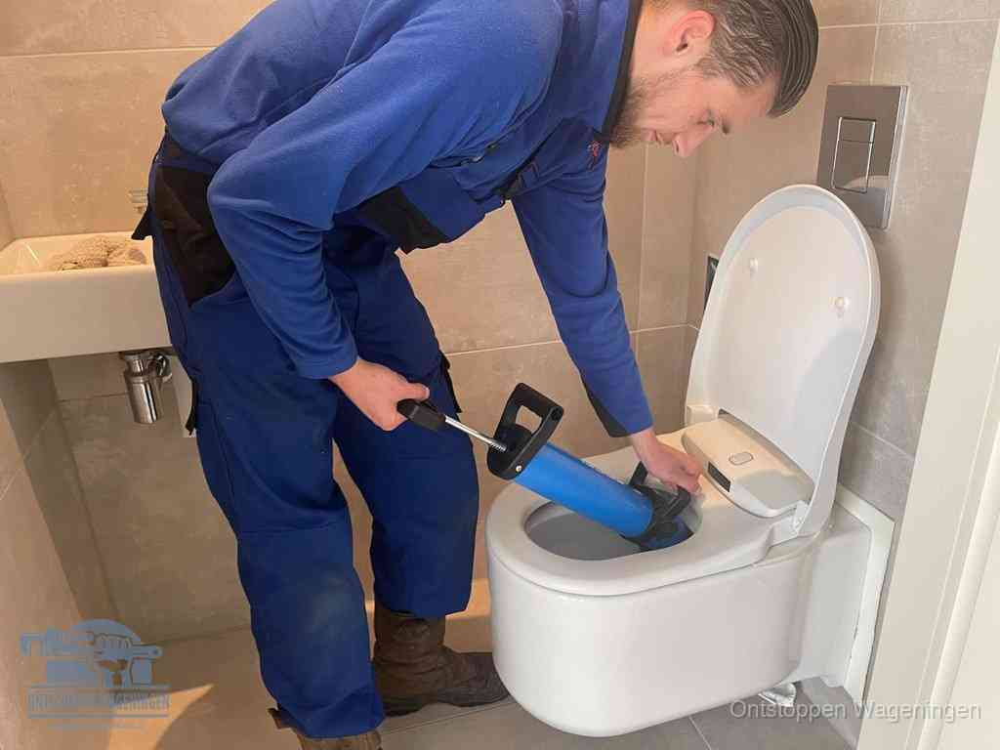

Wc verstopt
Het water komt omhoog en je durft niet meer door te trekken. De meeste verstoppingen zitten in de pot of net achter de bocht. Zit het dieper, in de afvoer of de standleiding, dan zien we dat met de camera. Daarna spoelt hij weer gewoon door.